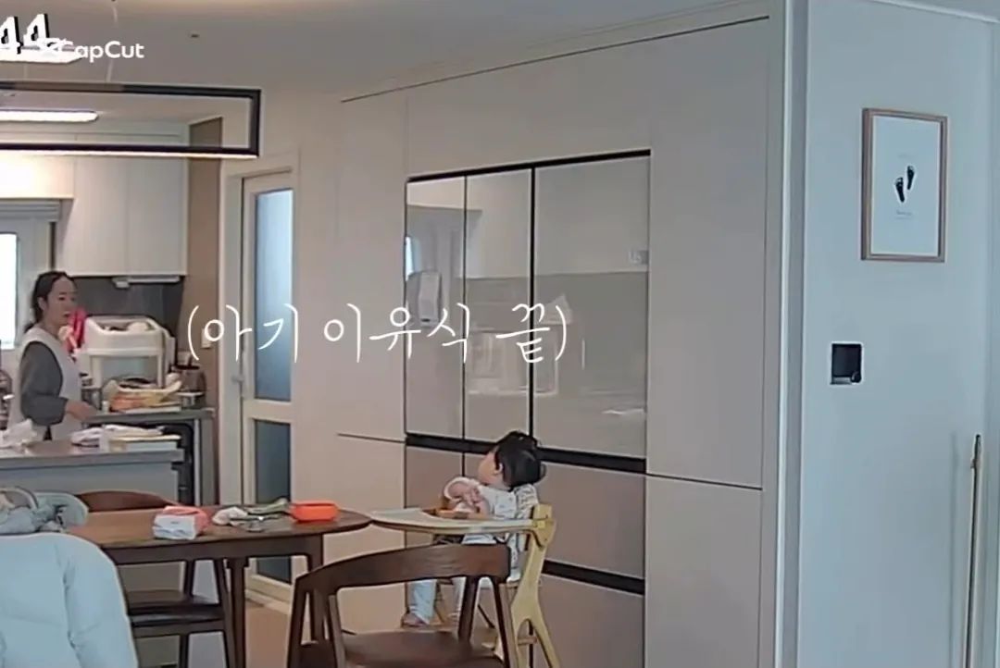
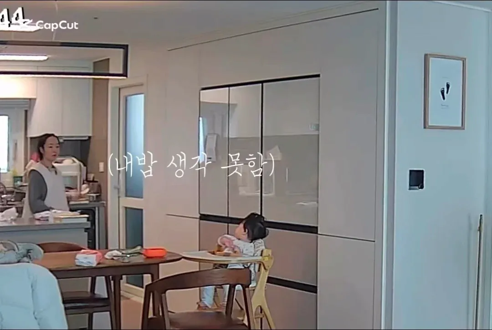
아기 이유식 조리하느라 자기 밥은 미처 못 차린 엄마
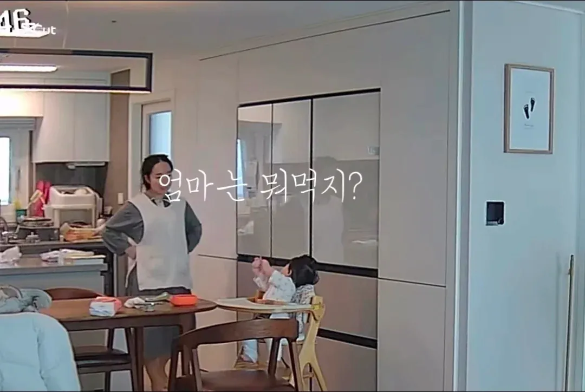 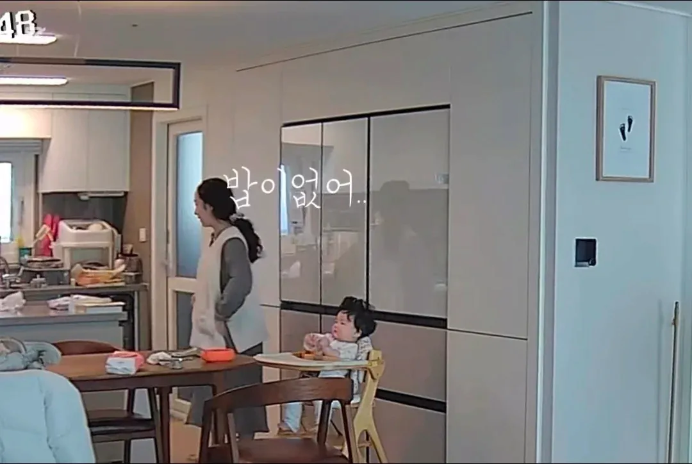 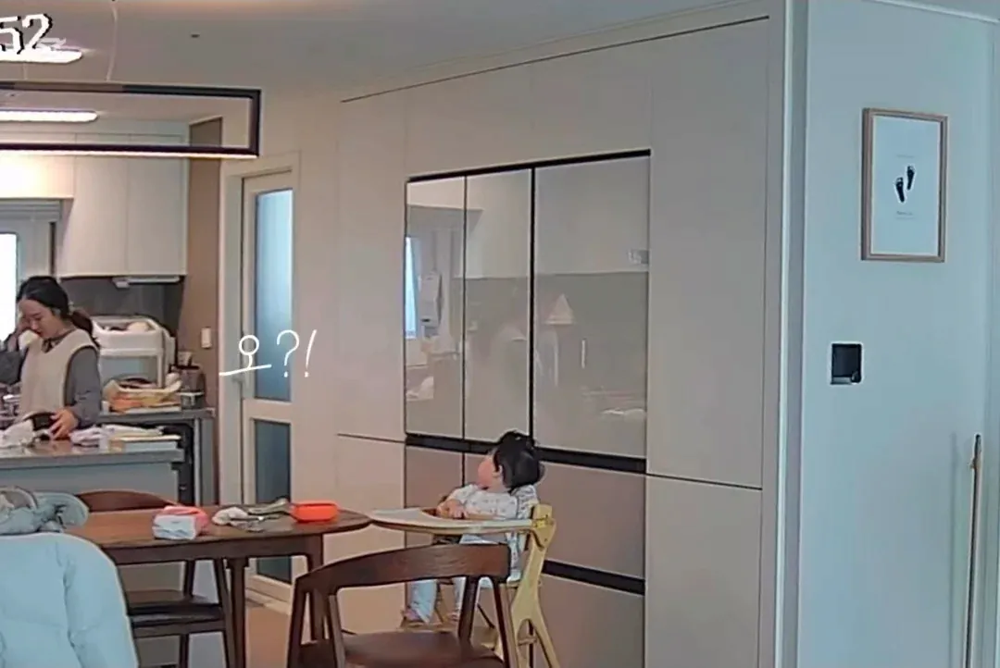 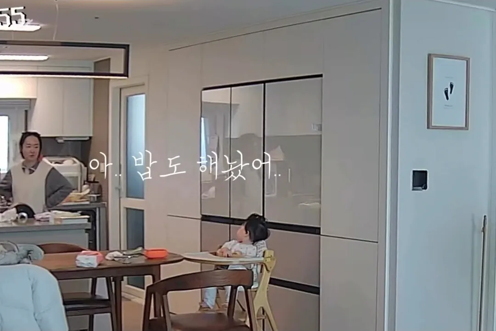 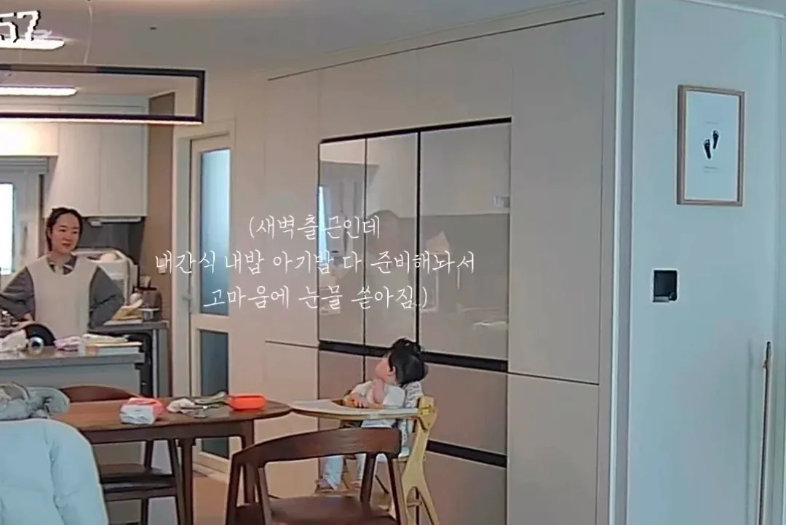
무심결 열어본 밥솥에 새 밥이 차려져 있다
새벽출근하는 남편이 아내 챙겨먹으라고
미리 해두고 간 것..
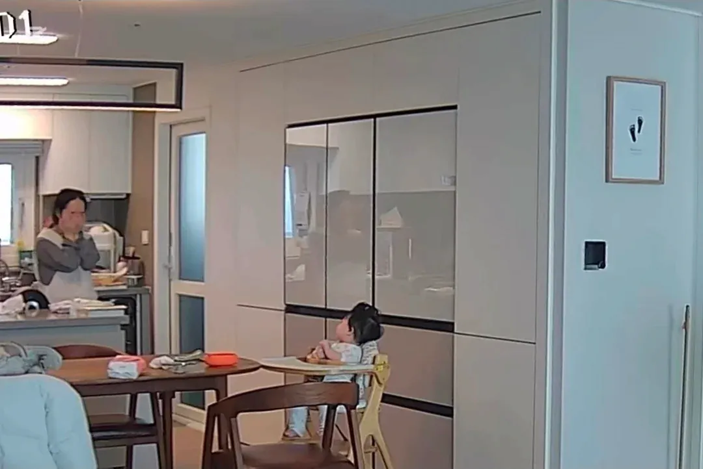 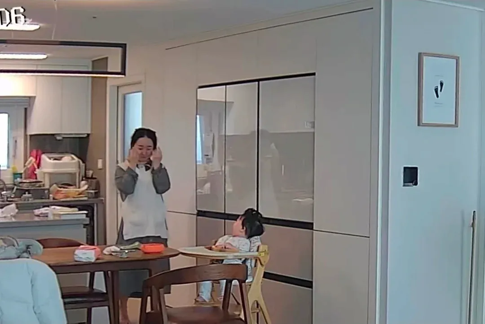 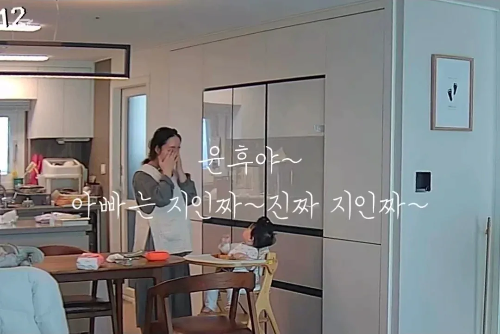 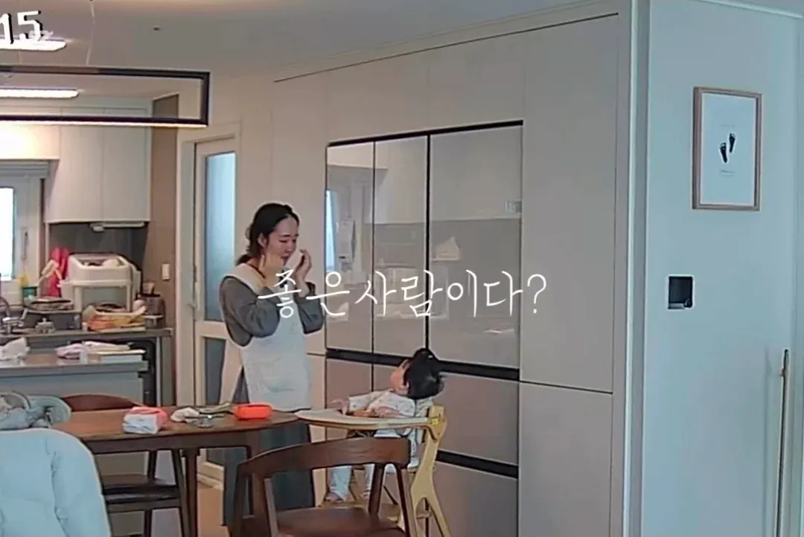 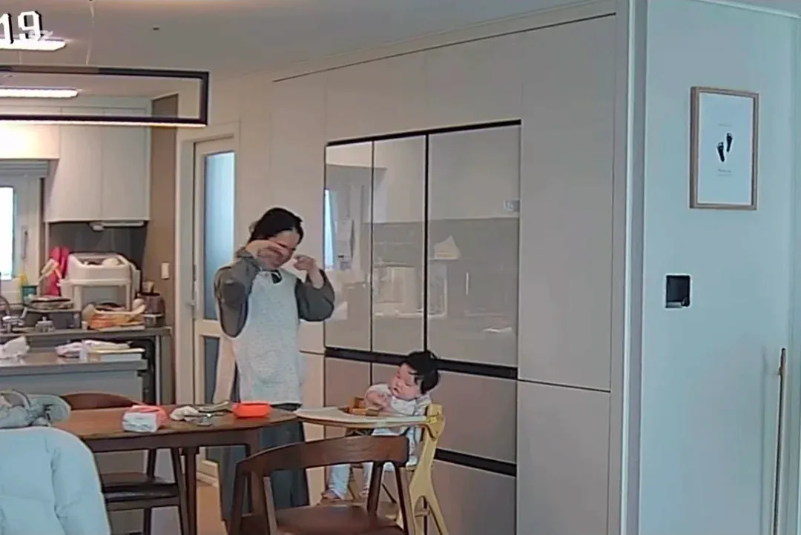 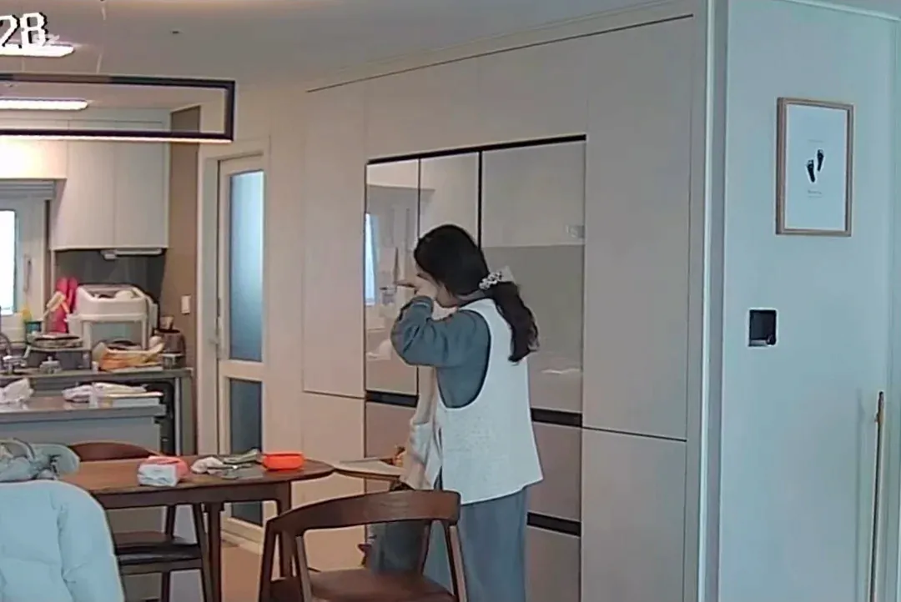
감동과 고마움에 눈물이 나지만
눈물 닦고 아기 밥 먹일 준비
아기 키우는 모든 분들
서로 아껴주며 화이팅
부부 부모 자식 할거 없이 가족구성원 안에서 각자 하기 어려운거 빼고 신경쓰이는거 알아서 해두면 됨 진짜 그거만 버릇 들이면 집안 꼴 알아서 돌아가는것처럼 편하게 느껴짐